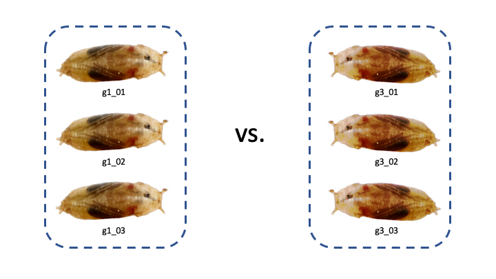
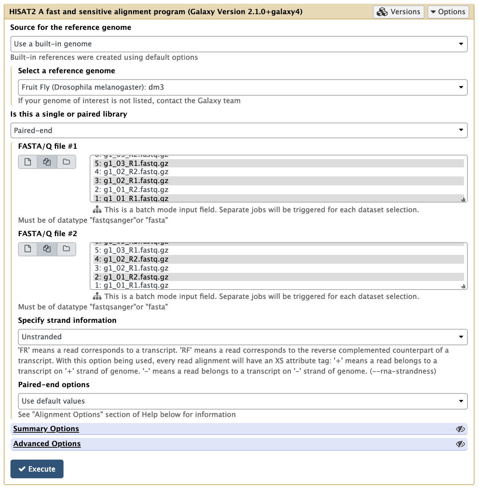
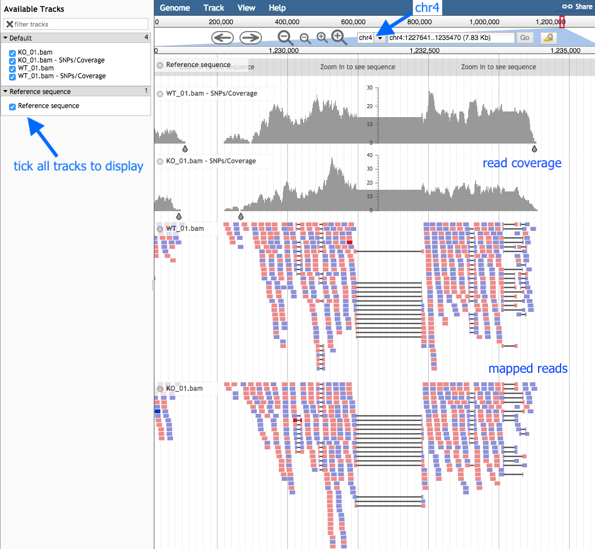
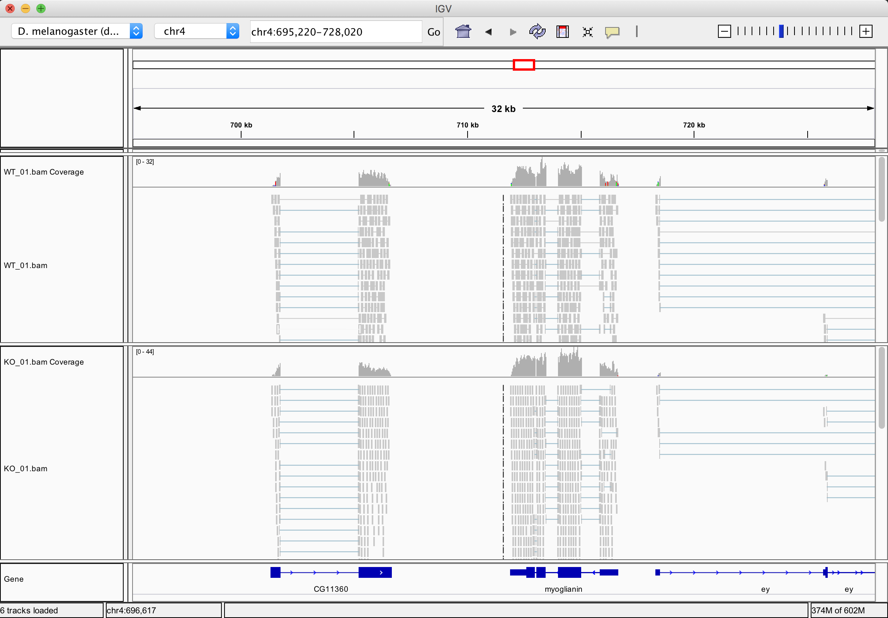
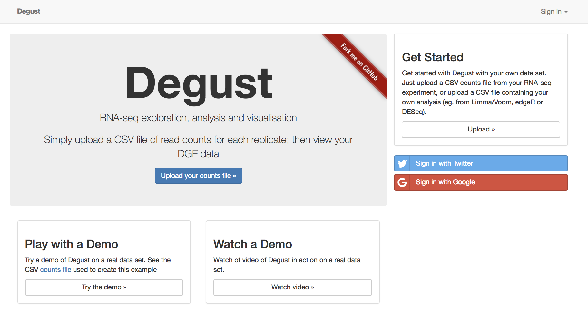
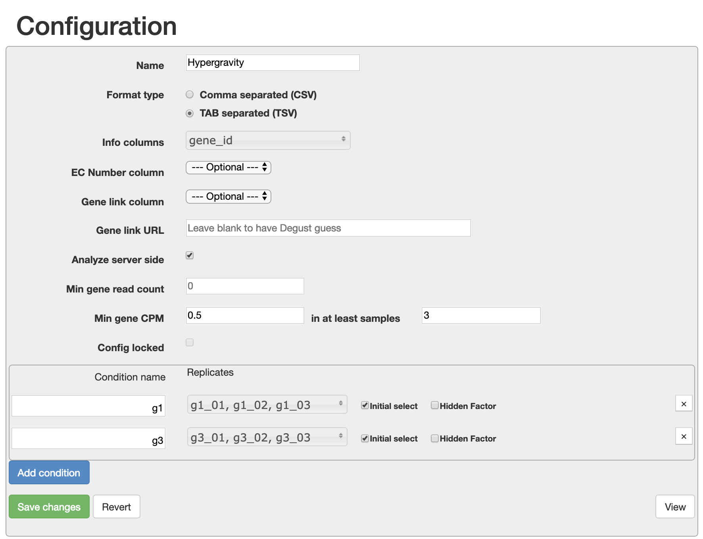
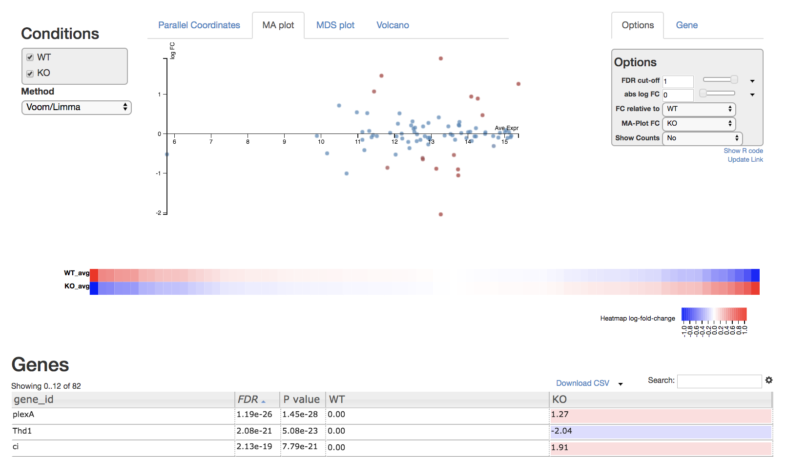
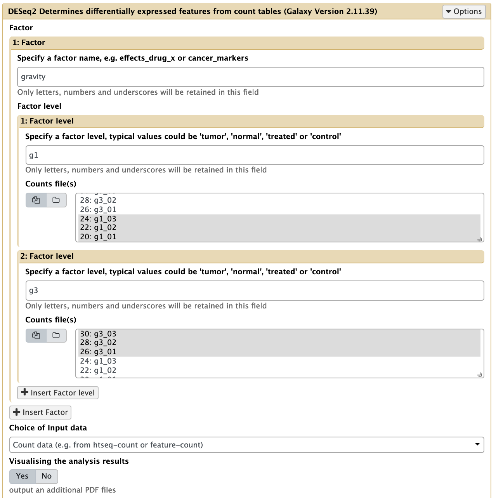

RNA-Seq - Differential Gene Expression¶
Authors: Jessica Chung, Mahtab Mirmomeni, Andrew Lonie
Tutorial Overview¶
In this tutorial we cover the concepts of RNA-seq differential gene expression (DGE) analysis using a dataset from the common fruit fly, Drosophila melanogaster.
The tutorial is designed to introduce the tools, datatypes and workflows of an RNA-seq DGE analysis. Here, we’ll be using a subset of the data from a published experiment by Hateley et. al. in 2016. In practice, full-sized datasets would be much larger and take longer to run.
In this tutorial we will:
- introduce the types of files typically used in RNA-seq analysis
- align RNA-seq reads with an aligner, HISAT2
- visualise RNA-seq alignment data with IGV or JBrowse
- use a number of different methods to find differentially expressed genes
- understand the importance of replicates for differential expression analysis
This tutorial does not cover the following steps that we might do in a real RNA-seq DGE analysis:
- QC (quality control) of the raw sequence data
- Trimming the reads for quality and for adaptor sequences
- QC of the RNA-seq alignment data
Learning Objectives¶
At the end of this tutorial you will be able to:
- understand the basic workflow of alignment, quantification, and testing, for RNA-seq differential expression analysis
- process raw RNA sequence data into a list of differentially expressed genes
- understand the relationship between the number of biological replicates in an experiment and the statistical power available to detect differentially expressed genes
Requirements¶
Participants with no previous Galaxy experience are strongly recommended to attend the “Introduction to Galaxy” workshop first.
Attendees are required to bring their own laptop computers.
The data¶
The sequencing data you will be working with is from Drosophila melanogaster pupae from the study, Transcriptomic response of Drosophila melanogaster pupae developed in hypergravity. The experiment has two conditions, g3 where pupae underwent development in three times Earth’s gravity (i.e. 3 g), and g1, the control, where pupae developed in the standard gravitational acceleration felt on the surface of Earth (i.e. 1 g). There are three samples in each condition and the sequencing data is paired-end so you will have two files for each of the six samples. Your aim will be to find differentially expressed genes in g1 vs g3.

Section 1: Preparation¶
1. Register as a new user in Galaxy if you don’t already have an account
- Open a browser and go to a Galaxy server. For example, you could use Galaxy Australia. Recommended browsers include Firefox and Chrome. Internet Explorer is not supported.
- Register as a new user by clicking User > Register on the top dark-grey bar. Alternatively, if you already have an account, login by clicking User > Login.
2. Import the RNA-seq data for the workshop.
If you are using Galaxy Australia, go to Shared Data > Data Libraries in the top toolbar, and select Data for RNA-Seq tutorial - Hypergravity. Select (tick) all of the files and click To History, and choose as Datasets, then Import.
Alternatively, if you are using your own personal Galaxy server or a different Galaxy server, you can import the data like this:
- In the tool panel located on the left, under Basic Tools select Get Data > Upload File. Click on the Paste/Fetch data button on the bottom section of the pop-up window.
-
Upload the sequence data by pasting the following links into the text input area. These six files are three paired-end samples from the g1 group. Keep the type as “Auto-detect” when uploading these files.
https://swift.rc.nectar.org.au:8888/v1/AUTH_377/public/rna_seq_hypergravity/g1_01_R1.fastq.gzThese six files are three paired-end samples from the g3 group.
https://swift.rc.nectar.org.au:8888/v1/AUTH_377/public/rna_seq_hypergravity/g1_01_R2.fastq.gz
https://swift.rc.nectar.org.au:8888/v1/AUTH_377/public/rna_seq_hypergravity/g1_02_R1.fastq.gz
https://swift.rc.nectar.org.au:8888/v1/AUTH_377/public/rna_seq_hypergravity/g1_02_R2.fastq.gz
https://swift.rc.nectar.org.au:8888/v1/AUTH_377/public/rna_seq_hypergravity/g1_03_R1.fastq.gz
https://swift.rc.nectar.org.au:8888/v1/AUTH_377/public/rna_seq_hypergravity/g1_03_R2.fastq.gz
https://swift.rc.nectar.org.au:8888/v1/AUTH_377/public/rna_seq_hypergravity/g3_01_R1.fastq.gzThen, upload this file of gene definitions. Keep the type as “Auto-detect” when this file as Galaxy will auto-detect the file as a GTF file. You should now have 13 files in your history.
https://swift.rc.nectar.org.au:8888/v1/AUTH_377/public/rna_seq_hypergravity/g3_01_R2.fastq.gz
https://swift.rc.nectar.org.au:8888/v1/AUTH_377/public/rna_seq_hypergravity/g3_02_R1.fastq.gz
https://swift.rc.nectar.org.au:8888/v1/AUTH_377/public/rna_seq_hypergravity/g3_02_R2.fastq.gz
https://swift.rc.nectar.org.au:8888/v1/AUTH_377/public/rna_seq_hypergravity/g3_03_R1.fastq.gz
https://swift.rc.nectar.org.au:8888/v1/AUTH_377/public/rna_seq_hypergravity/g3_03_R2.fastq.gz
Note: If you log out of Galaxy and log back at a later time your data and results from previous experiments will be available in the right panel of your screen called the ‘History’
3. View and have an understanding of the files involved in RNA-seq analysis.
-
You should now have the following files in your Galaxy history:
6 files containing paired-ended reads for the 3 samples that developed in 1 g:
- g1_01_R1.fastq.gz
- g1_01_R2.fastq.gz
- g1_02_R1.fastq.gz
- g1_02_R2.fastq.gz
- g1_03_R1.fastq.gz
- g1_03_R2.fastq.gz
6 files containing paired-ended reads for the 3 samples that developed in 3 g:
- g3_01_R1.fastq.gz
- g3_01_R2.fastq.gz
- g3_02_R1.fastq.gz
- g3_02_R2.fastq.gz
- g3_03_R1.fastq.gz
- g3_03_R2.fastq.gz
And 1 gene annotation file for chromosome 4 of the Drosophila genome:
- ensembl_dm3.chr4.gtf
These files can be renamed by clicking the pen icon if you wish.
- g1_01_R1.fastq.gz
-
These 12 sequencing files are in FASTQ format and have the file extension: “.fastq.gz”. If you are not familiar with the FASTQ format, click here for an overview. The “.gz” extension indicates these files have been compressed by gzip. FASTQ files are typically stored as compressed files to save disk space as they are usually gigabytes in size.
Each condition has three samples, and each sample has two files (an R1 file containing forward reads and an R2 file containing reverse reads).
Click on the eye icon to the top right of any FASTQ file to view the first part of the file.
Note: The reads are paired-end, i.e. g1_01_R1.fastq.gz and g1_01_R2.fastq.gz are paired reads from one sequencing run. If you’re unfamiliar with paired-end sequencing, you can read about it here.
-
The gene annotation file (ensembl_dm3.chr4.gtf) is in GTF format. This file describes where the genes are located in the D. melanogaster reference genome, filtered for genes on chromosome 4. Each feature is defined by a chromosomal start and end point, feature type (CDS, gene, exon etc), and parent gene and transcript. We will examine this file more closely later in Section 3 of this tutorial. More information on the GTF format can be found here.
Section 2: Alignment with HISAT2¶
In this section we map the reads in our FASTQ files to a reference genome. As these reads originate from mRNA, we expect some of them will cross exon/intron boundaries when we align them to the reference genome. We will use HISAT2 to perform our alignment. HISAT2 is a fast, splice-aware, alignment program that is a successor to TopHat2. More information on HISAT2 can be found here.
1. Align the RNA-seq reads to a reference genome.
In the left tool panel menu, under NGS Analysis, select NGS: RNA Analysis > HISAT2 and set the parameters as follows:
-
Source for the reference genome to align against: Use built-in genome
-
Select a reference genome: Fruit Fly (Drosophila melanogaster): dm3
- Single end or paired reads? Paired end
-
Forward reads:
(Click on the multiple datasets icon (which looks like two pieces of paper in a stack) and select all six of the forward FASTQ files ending in *_R1.fastq.gz. This should be correspond to every second dataset (e.g. 1,3,5,7,9,11). This can be done by holding down the ctrl key (Windows) or the command key (OSX) to select multiple files.)- g1_01_R1.fastq.gz
- g1_02_R1.fastq.gz
- g1_03_R1.fastq.gz
- g3_01_R1.fastq.gz
- g3_02_R1.fastq.gz
- g3_03_R1.fastq.gz
-
Reverse reads:
(Click on the multiple datasets icon and select all six of the reverse FASTQ files ending in *_R2.fastq.gz.)- g1_01_R2.fastq.gz
- g1_02_R2.fastq.gz
- g1_03_R2.fastq.gz
- g3_01_R2.fastq.gz
- g3_02_R2.fastq.gz
- g3_03_R2.fastq.gz
-
Use defaults for the other fields
- Execute
Your tool interface panel will look similar to this:

Note: This may take a few minutes, depending on how busy the server is.
2. Examine the alignment stats
HISAT2 outputs one bam file for each set of paired-end read files. Rename the 6 files into a more meaningful name (e.g. ‘HISAT on data 2 and data 1’ to ‘g1_01.bam’) by using the pen icon next to the file.
These files are BAM files (short for Binary Alignment Map) and like the name suggests, is a binary file. Galaxy automatically converts these to a plain-text equivalent (SAM) file to view when you click on the eye icon.
HISAT2 also outputs some information to stderr which we can preview by clicking on the dataset name. To view the raw file, click the “info” button (view details) of a dataset, say g1_01.bam, and find the “Tool Standard Error” row under “Job Information” in the table. Click the “stderr” link to view the alignment summary output.
50000 reads; of these:
50000 (100.00%) were paired; of these:
321 (0.64%) aligned concordantly 0 times
45766 (91.53%) aligned concordantly exactly 1 time
3913 (7.83%) aligned concordantly >1 times
----
321 pairs aligned concordantly 0 times; of these:
0 (0.00%) aligned discordantly 1 time
----
321 pairs aligned 0 times concordantly or discordantly; of these:
642 mates make up the pairs; of these:
529 (82.40%) aligned 0 times
77 (11.99%) aligned exactly 1 time
36 (5.61%) aligned >1 times
99.47% overall alignment rate
Here we see we have a very high alignment rate, which is expected since the reads in this dataset have been pre-selected to align to chromosome 4.
Section 3: Visualise the aligned reads¶
The purpose of this step is to :
- visualise the quantitative, exon-based nature of RNA-seq data
- visualise the expression differences between samples represented by the quantity of reads, and
- become familiar with interactive visualisation tools such as JBrowse and IGV.
JBrowse and IGV are both interactive tools that can visualise BAM files. You can pick either one to use in this section. JBrowse is run on Galaxy which means you can view your BAM file in your browser, but it takes a while to run the job (~30 mins). IGV is a separate application you’ll need to download to your computer and run locally.
Viewing in JBrowse¶
Before using JBrowse, you’ll need to convert your GTF file to a GFF file.
In the left tool panel menu, select the “GTF-to-GFF converter” tool, then provide your GTF file and click “execute”.
GTF and GFF are similar representations of the same information, but JBrowse requires the annotation information to be in GFF format.
To visualise the alignment data:
- search for “JBrowse” in the tool panel search bar
- for “Reference genome to display”: Use a built-in genome
- for “Select a reference genome”: Fruit Fly dm3
- leave other settings as default, except:
Set up a track for mapped RNA-seq reads:
- click “Insert Track Group” and then “Insert Annotation Track”
- for “Track Type”: BAM pileups
- for “BAM Track Data”: select the multiple datasets icon, then select a bam from each condition, e.g., g1_01.bam and g3_01.bam (your files may be named differently)
- for “Autogenerate SNP Track”: Yes
Set up a track for the annotated genome:
- click “Insert Track Group” and then “Insert Annotation Track”
- for “Track Type”: GFF/GFF3/BED/GBK Features
- for “GFF/GFF3/BED Track Data”: select the reference genome in GFF format, e.g. the converted GTF file (ensembl_dm3.chr4.gtf) - your files may be named differently
- Execute
JBrowse will create a single file with this visualization (this may take a while).
- When it is ready, click the eye icon to display in the centre panel.
- Make sure all “Available Tracks” on the left are ticked.
- Zoom in and out with the plus and minus buttons.
- Select “Chr4”.

Viewing in IGV¶
An alternative to JBrowse is IGV. If you don’t already have IGV installed on your computer, download and install it now. You will also need Java installed to run IGV.
To visualise the alignment data:
- Open the IGV application (this may take a few seconds). Once opened, use the top left drop-down menu bar to select the correct Drosophila genome (dm3). You may need to select the “More…” option, and select “D. melanogaster (dm3)”.
- In Galaxy, click on one of the BAM files, for example ‘g1_01.bam’, to expand the available options. Click on “display with IGV local” and the BAM file should be loaded into IGV.
- Select chr4 from the second drop box under the toolbar. Zoom in to view alignments of reads to the reference genome. You should see the characteristic distribution of RNA-seq reads across the exons of the genes, with some gaps at intron/exon boundaries. The number of reads aligned to a particular gene is proportional to the abundance of the RNA derived from that gene in the sequenced sample. (Note that IGV already has a list of known genes of most major organisms including Drosophila, which is why you can see the genes in the bottom panel of IGV.)
-
Open another BAM file from the other condition (e.g. ‘g3_01.bam’) by clicking on the dataset in Galaxy and clicking on “display with IGV local”.

Section 4. Quantification¶
HTSeq-count counts the number of the reads from each bam file that map to the genomic features in the provided annotation file. For each feature (a gene for example) we will obtain a numerical value associated with the expression of that feature in our sample (i.e. the number of reads that were aligned to that gene).
1. Examine the GTF file
Click on the eye icon to display the ensembl_dm3.chr4.gtf file in Galaxy.
This GTF file is essentially a list of chromosomal features
which together define genes. Each feature is in turn defined by a
chromosomal start and end point, feature type (CDS, gene, exon etc),
and parent gene and transcript. Importantly, a gene may have many features,
but one feature will belong to only one gene.
More information on the GTF format can be found
here.

The ensembl_dm3.chr4.gtf file contains ~4900 features which together define
the 92 known genes on chromosome 4 of Drosophila melanogaster.
2. Run HTSeq-count
-
Use HTSeq-count to count the number of reads for each feature.
In the left tool panel menu, under NGS Analysis, select NGS: RNA Analysis > htseq-count and set the parameters as follows:- Aligned SAM/BAM File:
(Select ‘Multiple datasets’, then select all six bam files using the shift key.)- g1_01.bam
- g1_02.bam
- g1_03.bam
- g3_01.bam
- g3_02.bam
- g3_03.bam
- GFF File: ensembl_dm3.chr4.gtf
- Stranded: No
- ID Attribute: gene_name
- Use defaults for the other fields
- Execute
- Aligned SAM/BAM File:
-
In the previous step, each input BAM file outputted two files. The first file contains the counts for each of our genes. The second file (ending with “(no feature)”) contains the stats for the reads that weren’t able to be uniquely aligned to a gene. We don’t need the “(no feature)” files so we can remove then with the delete “X” button on the top right.
-
Rename the remaining six files from htseq-count to meaningful names, such as g1_01, g1_02, etc.
3. Generate a count matrix
- Generate a combined count matrix by combining our six files.
In the left tool panel menu, under NGS Analysis, select
NGS: RNA Analysis > Generate count matrix and set the parameters as follows:
- Count files from your history:
(Select all six count files using the shift key.)- g1_01
- g1_02
- g1_03
- g3_01
- g3_02
- g3_03
- Use defaults for the other fields
- Execute
- Count files from your history:
Examine the outputted matrix by using the eye icon.
Each column corresponds to a sample and each row corresponds to a gene. By
sight, see if you can find a gene you think is differentially expressed
just by looking at the counts.
We now have a count matrix which we will now use to find differentially expressed genes between g1 samples and g3 samples.
Section 5. Degust¶
Degust is an interactive visualiser for analysing RNA-seq data. It runs as a web service and can be found at degust.erc.monash.edu/.

1. Load count data into Degust
- In Galaxy, download the count matrix you generated in the last section using the disk icon.
- Go to degust.erc.monash.edu/ and click on “Upload your counts file”.
- Click “Choose file” and upload the recently downloaded Galaxy tabular file containing your RNA-seq counts.
2. Configure your uploaded data
- Give your visualisation a name.
- For the Info column, select “gene_id”.
- Add two conditions: g1 and g3. For each condition, select the three samples which correspond with the condition.
- Set min gene CPM to 0.5 in at least 3 samples.
- Click Save changes and view your data.

\endshowable
Read through the Degust tour of features. Explore the parallel coordinates plot, MA plot, MDS plot, heatmap and gene list. Each is fully interactive and influences other portions on the display depending on what is selected.

On the right side of the page is an options module which can set thresholds to filter genes using statistical significance or absolute-fold-change.
On the left side is a dropdown box you can specify the method (Voom/Limma or edgeR) used to perform differential expression analysis on the data. You can also view the R code by clicking “Show R code” under the options module on the right.
4. Explore the demo data
Degust also provides an example dataset with 4 conditions and more genes. You can play with the demo dataset by clicking on the “Try the demo” button on the Degust homepage. The demo dataset includes a column with an EC number for each gene. This means genes can be displayed on Kegg pathways using the module on the right.
5. Explore the full dataset
The FASTQ files we started with is only a small proportion of the full dataset. If you wish, you can download the full count matrix here, upload it to Degust, and explore the results.
Section 5. DESeq2¶
In this section we’ll use the “DESeq2” tool in Galaxy to do our differential gene analysis. This tool uses the separate HTSeq files we generated in section 4.
Similar to Voom/Limma or edgeR that was used in Degust to statistically test our data, DESeq2 will:
- statistically test for expression differences in normalised read counts for each gene, taking into account the variance observed between samples,
- for each gene, calculate the p-value of the gene being differentially expressed– this is the probability of seeing the data or something more extreme given the null hypothesis (that the gene is not differentially expressed between the two conditions),
- for each gene, estimate the fold change in expression between the two conditions.
- Use DESeq2 to find differentially expressed features from the count data.
In the left tool panel menu, under NGS Analysis, select NGS: RNA Analysis > DESeq2 and set the parameters as follows:- 1: Factor
- Specify a factor name: gravity
- 1: Factor level:
- Specify a factor level: g1
(Select the three g1 htseq-count files.)- g1_01
- g1_02
- g1_03
- Specify a factor level: g1
- 2: Factor level:
- Specify a factor level: g3
(Select the three g3 htseq-count files.)- g3_01
- g3_02
- g3_03
- Specify a factor level: g3
- Use defaults for the other fields
- Execute
- 1: Factor

- Have a look at the outputs of DESeq2. We will now filter significant
(adjusted p-value < 0.05) genes from the DESeq2 result file.
Under Basic Tools, click on Filter and Sort > Filter:- Filter: “DESeq2 result file on data …”
- With following condition: c7 < 0.05
- Execute
How many differentially expressed genes with adjusted p-value < 0.05 are there?
Section 6. The importance of replicates¶
-
Repeat the previous differential expression analysis with two samples in each group instead of three. How do you expect your results to differ when using fewer samples?
-
Filter genes with adjusted-p-value < 0.05. How many genes are significant?
-
Run DESeq2 again, using only one sample from each group. How many genes are now significant?
-
Can you find genes that were identified as differentially expressed when using three samples in each condition that were not identified as differentially expressed when using two samples? What do you expect these gene’s counts or logFC values to look like compared to genes that remained statistically significance? Have a look at the counts or the logFC values of these genes.
The identification of differentially expressed genes is based on the size of the difference in expression and the variance observed across multiple replicates. This demonstrates how important it is to have biological replicates in differential gene expression experiments.
CG1674 is an example of a gene that showed up as differentially expressed when we did a 3 vs 3 comparsion but not with a 2 vs 2 comparsion. If we say that genes like CG1674 was truly differentially expressed, we can call these instances where the true differentially expressed genes are not identified as false negatives. Generally, increasing replicates decreases the number of false negatives.
It is also more likely to see more false positives when using an insufficient number of replicates. False positives can be defined as identifying a gene as differentially expressed when it is, in reality, not.
Optional extension¶
Have a go at doing another differential expression analysis with the following Saccharomyces cerevisiae data from chromosome I. This time, the two conditions are called ‘batch’ and ‘chem’, and like before, there are three samples per condition.
Batch sequence data:
https://swift.rc.nectar.org.au:8888/v1/AUTH_a3929895f9e94089ad042c9900e1ee82/RNAseqDGE_ADVNCD/batch1_chrI_2.fastq
https://swift.rc.nectar.org.au:8888/v1/AUTH_a3929895f9e94089ad042c9900e1ee82/RNAseqDGE_ADVNCD/batch2_chrI_1.fastq
https://swift.rc.nectar.org.au:8888/v1/AUTH_a3929895f9e94089ad042c9900e1ee82/RNAseqDGE_ADVNCD/batch2_chrI_2.fastq
https://swift.rc.nectar.org.au:8888/v1/AUTH_a3929895f9e94089ad042c9900e1ee82/RNAseqDGE_ADVNCD/batch3_chrI_1.fastq
https://swift.rc.nectar.org.au:8888/v1/AUTH_a3929895f9e94089ad042c9900e1ee82/RNAseqDGE_ADVNCD/batch3_chrI_2.fastq
Chem sequence data:
https://swift.rc.nectar.org.au:8888/v1/AUTH_a3929895f9e94089ad042c9900e1ee82/RNAseqDGE_ADVNCD/chem1_chrI_2.fastq
https://swift.rc.nectar.org.au:8888/v1/AUTH_a3929895f9e94089ad042c9900e1ee82/RNAseqDGE_ADVNCD/chem2_chrI_1.fastq
https://swift.rc.nectar.org.au:8888/v1/AUTH_a3929895f9e94089ad042c9900e1ee82/RNAseqDGE_ADVNCD/chem2_chrI_2.fastq
https://swift.rc.nectar.org.au:8888/v1/AUTH_a3929895f9e94089ad042c9900e1ee82/RNAseqDGE_ADVNCD/chem3_chrI_1.fastq
https://swift.rc.nectar.org.au:8888/v1/AUTH_a3929895f9e94089ad042c9900e1ee82/RNAseqDGE_ADVNCD/chem3_chrI_2.fastq
Gene annotation: